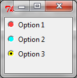

Le langage python
3 et l'Interface Graphique Tkinter
|
| Le widget RadioButton |
| anchor |
alignement du
texte dans le widget. par
défaut=CENTER |
| background
(bg) |
Couleur
arrière plan. |
| bitmap |
bitmap
monochrome à afficher |
| borderwidth
(bd) |
Epaisseur
de la bordure en pixels. Améliore l'effet de relief. Défaut=2. |
| command |
Procédure
exécuté quand le widget et coché/décoché |
| cursor |
Curseur de la souris
quand celle-ci survole le widget |
| font |
Fonte
du texte du bouton. exemple: font="arial 8 italic
bold" |
| foreground
(fg) |
Couleur
du texte |
| height |
Hauteur
du widget en lignes |
| image |
image
à afficher sur le widget à la place du texte |
| indicatoron |
Si
cette option est placée à 0, les cercles à cocher sont remplacés
par des boutons enfoncé/relâché |
| justify |
Permet
de justifier le texte (LEFT, CENTER, RIGHT) dans le cas où
celui-ci contient des \n pour retourner à la ligne |
| padx |
Marge
horizontale du texte par rapport aux limites du widget padx=3 => 3 pixels, padx='3m' => 3 mm, padx='1c' => 1 cm, padx='0.5i' => 0.5 inch |
| pady |
Marge
verticale. Voir padx pour les unités |
| relief |
Relief du
bouton. Défaut = RAISED |
| selectcolor |
couleur de fond du cercle à
cocher |
| selectimage |
dans
le cas ou le widget utilise une image au lieu d'un texte, cette
option permet de définir l'image à afficher quand le widget est
coché |
| state |
Permet
d'activer (NORMAL) ou de désactiver (DISABLED) le widget je n'ai pas bien compris le rôle de la valeur ACTIVE |
| text |
texte
à afficher sur le widget, \n permet un texte sur plusieurs
lignes |
| textvariable |
pour
lier le texte affiché sur le widget à une variable de type
StringVar() |
| value |
permet
de définir la valeur qui sera affectée à la variable commune
quand le widget sera coché. Selon que la variable commune est de
type IntVar() ou StringVar(), cette valeur doit être un entier
ou une chaîne |
| variable |
Définit
la variable liée au widget. Elle doit être la même pour tous les
RadioButton du même groupe. |
| width |
Largeur
du bouton en caractères |
En plus des méthodes universelles , ce widget supporte les méthodes:
| .deselect() |
place
le widget dans son état 0 = OFF |
| .invoke() |
Appelle
le callback du widget défini par l'option command
comme si le widget avait été cliqué |
| .select() |
place
le widget dans son état 1 = ON |
| from
tkinter import * def sel(): L1.config(text = "Vous avez choisi l'option " + str(var.get())) root = Tk() var = IntVar() var.set(3) R1 = Radiobutton(root, text="Option 1",selectcolor='brown1', variable=var, value=1,command=sel) R1.pack( anchor = W ) R2 = Radiobutton(root, text="Option 2", selectcolor='cyan', variable=var, value=2,command=sel) R2.pack( anchor = W ) R3 = Radiobutton(root, text="Option 3", selectcolor='yellow', variable=var, value=3,command=sel) R3.pack( anchor = W) L1 = Label(root) L1.pack() root.mainloop() |